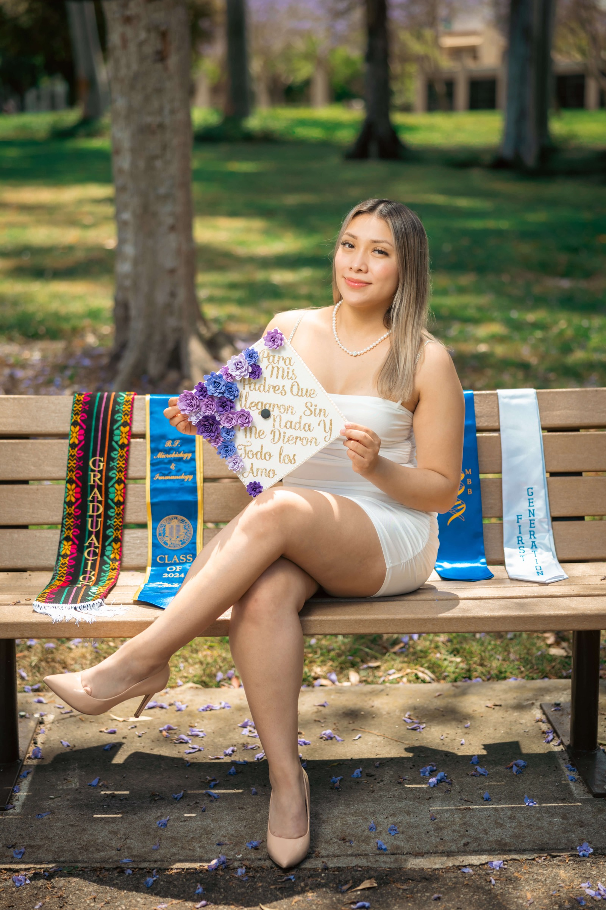
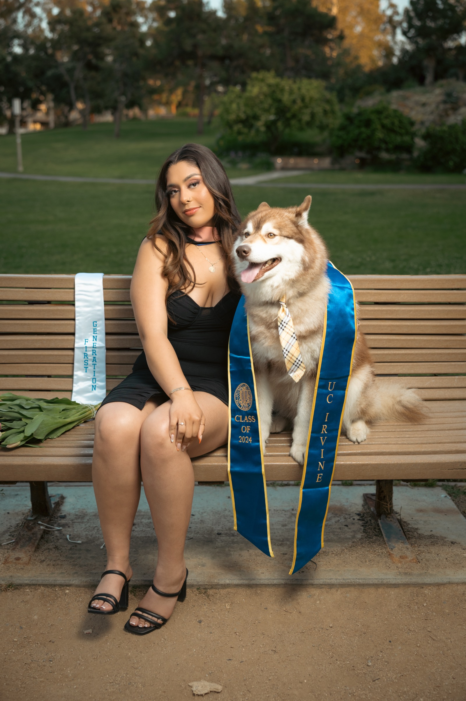
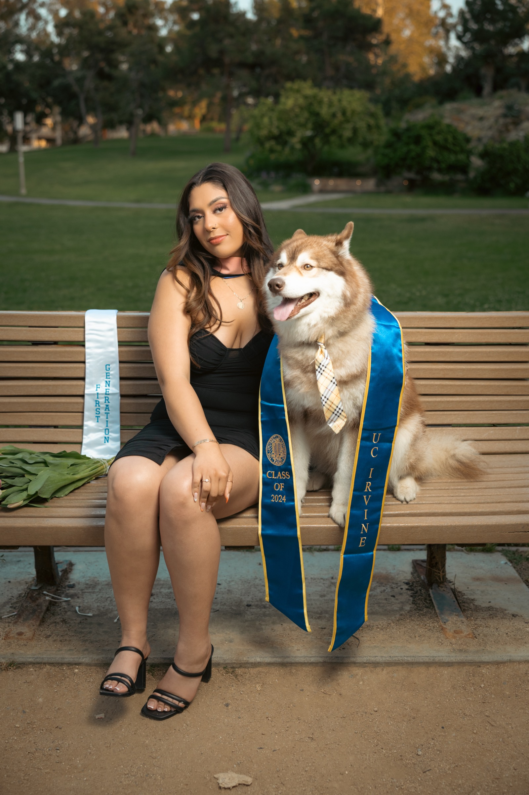
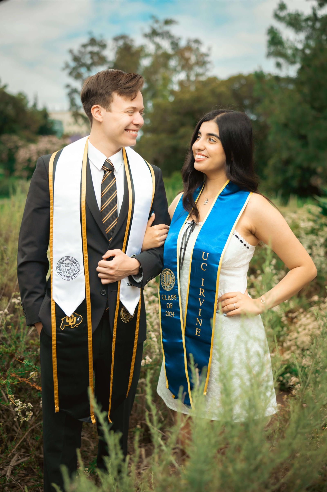

After 7 years and over 400 graduates across Southern California, I have seen just about everything that can happen during a grad session. The best photos always come from people who showed up prepared and ready to have fun.
This guide covers everything you need to know before your shoot, from packing your bag the night before to nailing your poses on camera.
What to Bring to Your Graduation Shoot
This sounds obvious, but you would be surprised how often someone forgets a key item. Pack your bag the night before and triple check it.
Here is the essential checklist:
- Cap with your decorated top if you have one
- Gown pressed or steamed to remove wrinkles
- Stoles and sashes for your school, honors, cultural orgs, or Greek life
- Tassel in the correct color for your degree
- Bobby pins to secure your cap (bring extras)
- Comfortable shoes for walking between locations, plus heels or dress shoes for photos
- Touch-up kit with hairspray, makeup essentials, and fashion tape
- Water bottle to stay hydrated, especially during warm sessions
Steam or press your gown the night before. Wrinkled fabric shows up in photos more than you think. If you do not have a steamer, hang it in the bathroom while you shower and the steam will do the work for you.
What to Wear: Outfit Tips
Your outfit matters more than you might think. You will be taking photos both in and out of your cap and gown, so plan for both looks.
For Ladies

The most popular colors I see are white, black, navy, and blush pink. Solid colors photograph best since busy patterns can distract from your face. A fitted dress or a nice top with a skirt works great. If you want to switch it up, bring a casual backup outfit for variety.

White and black are the two most popular choices I see. Both photograph beautifully. Some graduates bring two outfits and we switch halfway through the session for a completely different look.
Wear comfortable walking shoes to get between locations and swap into your heels or dress shoes when we start shooting. I always give you a heads up before we start so you have time to change.
For Guys

A well-fitted suit is the classic choice. Black, navy, or charcoal all look sharp. If suits are not your style, a clean button-down with dress pants works just as well. Make sure your shoes are polished and your shirt is pressed.
Some guys also bring a more casual option like a nice polo or even a jersey from their sport. It is your session, so wear what feels like you.
Sunglasses with a suit is a look that always comes out clean. Bring a pair even if you are not sure about them.
Cultural attire and heritage sashes are always a great addition. I love when graduates bring pieces that represent where they come from.
Props That Add Personality
Props are not required, but the right ones can make your photos more personal and more fun. Here are some of my favorites from past sessions:

- Sunglasses for a fun, confident vibe
- School plushies or mascots like the UCI anteater
- Flower bouquets for an elegant touch
- Champagne for a celebratory pop (check campus rules first)
- Pets if your campus allows it
- Flower petals as an eco-friendly confetti alternative
School mascot plushies are one of the most popular props. At UCI, the stuffed anteater makes an appearance at almost every session. We also always stop by the Peter the Anteater statue for a photo.
 

Pets are always welcome at my sessions. Dogs, cats, and even a few rabbits have made appearances. They always steal the show.
Bring Your People
Some of the most meaningful photos I capture are the ones with the people you love. Significant others, best friends, siblings, parents. Graduation is a shared celebration, and those moments together are worth documenting.
Couples photos are always popular. I will get candid shots of you two together as well as posed portraits. If you are both graduating, we can work both sashes and stoles into the shots.
Family photos are just as important. Parents, grandparents, siblings. These are the people who got you here. I always set aside time for group shots, so invite whoever you want.

Your dog counts as family too. Some of my favorite shots have been graduates with their pets alongside their family.
Posing Like a Pro
Do not worry if you feel awkward in front of the camera. I guide you through every pose during our session. But if you want a head start, here are some of the base poses I use with every client:

- Crossed Arms - Professional and relaxed. Works great with or without the gown. This is usually the first pose I start with to warm you up.
- Hip Shot / Hands in Pockets - Casual and confident. Shift your weight to one leg and pop the other hip slightly.
- Stole Shot - Hold your stole or sash out to one side. I also love the over-the-shoulder drape for a more editorial feel.
- School Hand Sign - Fight On for USC, Zot Zot for UCI. These are always crowd pleasers on Instagram.
- The Look Back - Walk away from the camera and glance back over your shoulder. This is one of the most cinematic shots you can get.


I will walk you through variations of each pose during the session. The key is to relax, move slowly, and trust the process. I will tell you exactly where to look and what to do with your hands.
Fun With the Cap
The cap is one of your best accessories. There are so many ways to use it beyond just wearing it on your head.

- Toss it straight up for a classic celebration shot
- Hold it in front of your face for a playful peek-a-boo look
- Hold it out to the side while walking for a candid feel
- Back of head shot showing off your decorated cap
- Wear it proudly with your chin up and a big smile
If you decorated your cap, make sure to bring it. I always get dedicated shots of the design since so much work goes into those.

Final Thoughts
Do not overthink it. These photos are meant to celebrate you. The best sessions happen when you show up prepared, bring your personality, and let yourself have fun with it.
I handle the lighting, the angles, and the editing. All you need to do is show up and be yourself. Want to see what a full session looks like? Check out our UCI graduation shoot breakdown.
Ready to book your session? Get in touch or check out the pricing page to see packages.